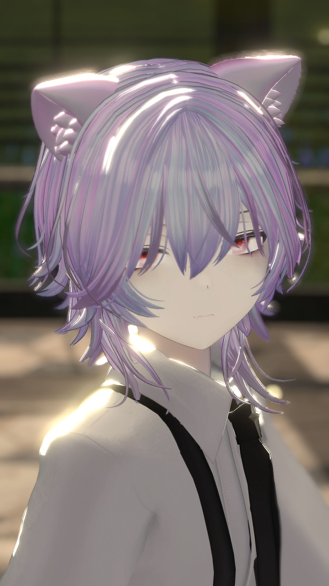

ABOUT

名前：牛島 洸一
1. 自分の理念 異分野の知識とデジタル表現で、「情報社会の課題を止揚（アウフヘーベン）」するデザインを探求
・デジタルメディア技術： 幼少期から今に至るまでゲームが好きで、特に昨今はAR/VRに興味がありBlenderやUnityといった3D・インタラクティブな制作環境に独学で触れてきた。現在では趣味として、現実空間とデジタル空間をつなぐような「小物制作」に取り組んでいる。これは、平面デザインだけでなく、情報や体験を空間的・時間的に捉える力につながる大きなアドバンテージであると考える。 ・視覚表現の基礎： 幼少期からの趣味である写真は、私の「観察力」の基盤となった。高校時代には美術部で写真専攻として活動し、佳作などの受賞経験を通じ、光・構図・メッセージ性を一枚の視覚情報に凝縮する力を磨いた。5. 将来の展望 情報デザイン学科情報デザイン専攻で、これまでに培った異分野の知識と論理的思考、及び3D・インタラクティブな表現技術を、体系的なデザイン理論と結びつけたいと考えている。特に、インターネットに小さい頃から触れてきた人間として、情報に埋没する現代のユーザーに対して、「価値ある情報」を「深く視覚的に理解させる」ための新しいメディア表現やUI/UXを探求し、多方面と連携し社会構築できるデザイナーを目指したい。
WORKS

PROCESS
Unity 小物プロトタイプ — 試作→評価→改善
モデリング→インポート→インタラクション設計の各段階でのメモや失敗、改善点を提示。
写真シリーズ — 撮影ノート
撮影地・時間・機材・構図メモ。意図した視点と偶発的な発見の記録。
CONTACT
Email: momose140901@gmail.com